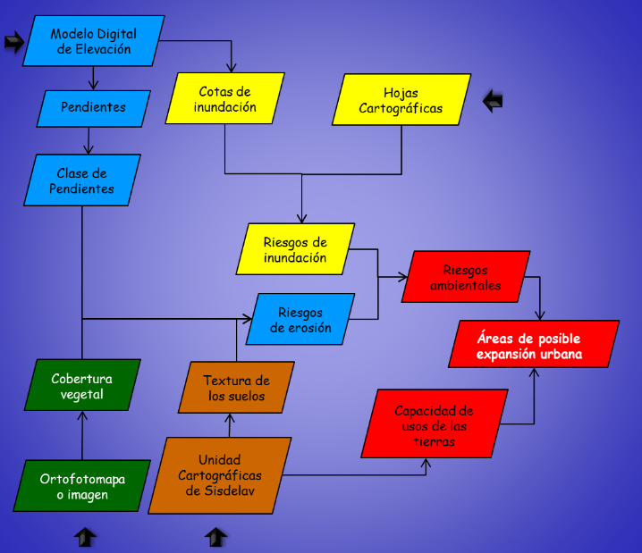

FUNDAMENTOS DE SIG
Introduccion
Aplicaciones:
- Qgis.
Informacion:
- Hoja Cartográfica de IVGSB (Ej: 6646-IV-ne.tif)
- Modelo digital de elevación (DEM).
- Ortofotomapas (Ej: 66464ne.img)
- Unidad cartográficas de suelos (Uc_Sisdelav.shp).
- Base de datos del proyecto Sisdelav (Ucatribu_1.dbf).
Materiales:
La distribución de los materiales por equipo será la mostrada en el Cuadro 1.
Cuadro 1. Información para los equipos
| Equipo | Hoja Cartografica |
|---|---|
| 1 | 6646-I-no |
| 2 | 6646-III-ne |
| 3 | 6646-II-no |
| 4 | 6646-II-ne |
| 5 | 6646-I-se |
Procedmiento:
El procedimiento seguido para ejecutar este ejercicio se describe a continuación y está dividido en rutas para tratar de hacerlo más entendible. (Ver Figura 1).
Inicialmente vamos a recordar el objetivo de este ejercicio. El cual, no es más que analizar los riesgos ambientales en un sector de la cuenca del lago de Valencia, así como encontrar posibles áreas de expansión urbanas en esta misma región.
Las áreas de posible expansión urbana (Ejemplo simplificado para este ejercicio), serán aquellas que no tengan riesgos ambientales. Para obtenerlas se analizarán los riesgos de inundación y erosión.
El riesgo de inundación: en este ejercicio estará expresado por los riesgos de desborde de ríos, quebradas, además de las crecidas de las cotas del lago de Valencia.
Riesgos de erosión: este proceso puede estar influenciado por diversas variables ambientales que promueven o no que una superficie sea fácilmente erosionable. Tales variables pueden ser la precipitación, el relieve, los suelos, la cobertura vegetal, entre otros. En nuestro caso solo tomaremos en cuenta el relieve, la cobertura vegetal y los suelos, ya que mapear la capacidad erosiva de la precipitación es un procedimiento muy complicado y esto es solo un ejemplo simplificado de cómo emplear la tecnología SIG para tratar de estudiar un fenómeno natural.
Por otro lado para entender mejor el procedimiento del ejercicio observe la Figura 1 y siga las rutas de los diferentes colores que estudian cada una de las variables consideradas relevantes.
En este ejercicio emplearemos como gestor de SIG a QGis.
La información necesaria para realizar este ejercicio está en la carpeta FSIG22/Info_Practica.
Las hojas cartográficas para cada grupo se encuentran en: FSIG22/Info_Practicas/Grupos/Cartas_2013.
El modelo digital de elevación de la cuenca del lago de Valencia se encuentra en: FSIG22/Info_Practicas/MDE_2013/mde1.tif (este es para todos los grupos a excepción del grupo 2, para este último grupo su modelo de altura se llama: dem_g2d.tif).
Figura 1. Esquema para desarrollo del ejercicio.
